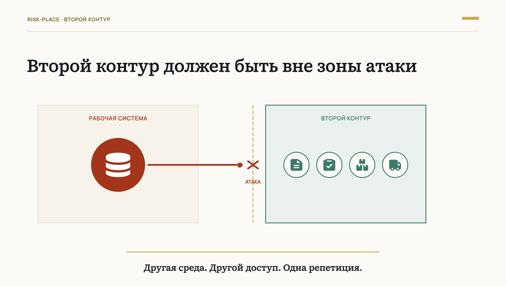

У компании может быть резервная копия, комплект бланков и даже второй сервер — и все равно не быть рабочего второго контура. Проверка начинается с простого вопроса: сможет ли та же атака добраться до резерва, до людей, которые им пользуются, и до их доступов?

Разнесите не только данные, но и доступ
Копия на соседнем сервере удобна для быстрого восстановления после некоторых технических сбоев. Но при атаке шифровальщика важно другое: может ли злоумышленник изменить или удалить эту копию теми же доступами, которыми закрыта рабочая база.
Второй контур размещают в отдельной среде с собственными правилами доступа. То же относится к выгрузке остатков, контактам и инструкциям. Если дежурный не может открыть их без основной системы, разнесения на практике нет.
Проверяйте путь атаки до резерва, а не только факт наличия копии.
Соберите минимальный рабочий комплект
Не пытайтесь воспроизвести всю компанию. Выберите несколько действий, которые сохранят самый важный поток: принять ограниченный заказ, проверить ходовой остаток, выпустить разрешенную партию и сообщить клиенту подтвержденный срок.
- Датированная выгрузка необходимых остатков и реквизитов.
- Бланки заказа, движения товара и отгрузки с понятной нумерацией.
- Список людей, которые могут обещать срок и разрешать выпуск.
- Отдельно хранящиеся контакты контрагентов и правило следующего сообщения.
У каждого элемента укажите владельца, место хранения и время последнего обновления. Старая выгрузка может создать уверенность, но не помогает отгрузить правильную партию.
Проверьте контур на одном заказе
Репетиция не обязана останавливать работу компании. Достаточно провести один учебный заказ через второй контур: найти выгрузку, заполнить документы, получить разрешение, записать операцию и передать сведения тому, кто будет делать сверку.
Если участникам пришлось войти в рабочую систему за инструкцией или телефоном, отметьте это как зависимость. После репетиции уберите ее и повторите проверку позже. Второй контур становится надежнее через небольшие исправления, а не через увеличение папки с документами.
Заранее признайте предел ручной работы
Второй контур не обещает полный выпуск и не отменяет восстановление учета. Он сохраняет ограниченный, заранее выбранный поток и порядок в записях. Уникальные партии, специальные цены и сложные спецификации могут остаться за его границей.
Определить этот предел и проверить изоляцию помогает проверка готовности к шифровальщику. В ней второй контур оценивается по тому, что компания действительно способна выполнить в день атаки.
Частые вопросы
Для сценария шифровальщика этого обычно недостаточно. Нужно проверить, защищена ли копия от той же атаки и тех же скомпрометированных доступов.
Один ограниченный заказ от приема до отгрузки, включая письмо клиенту и запись для последующей сверки с основной системой.
Можно предусмотреть защищенную копию, если ее доступ ограничен, версия контролируется, а порядок использования понятен уполномоченным людям.
Готова ли команда к первому часу кризиса
Планы проверяются не чтением, а сценарием. Диагностика покажет пробелы, корпоративный формат отрабатывает их с вашей командой на ваших процессах.